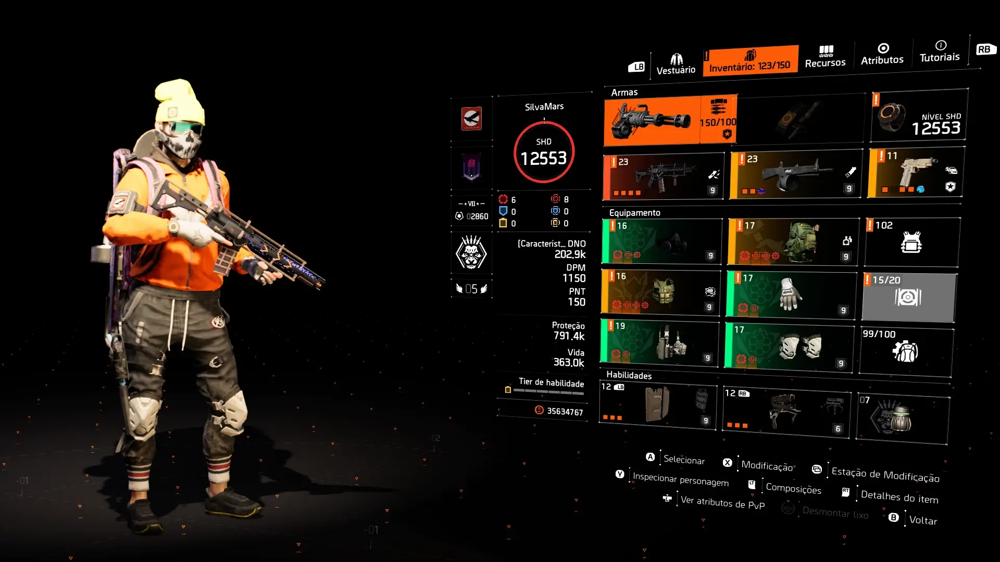
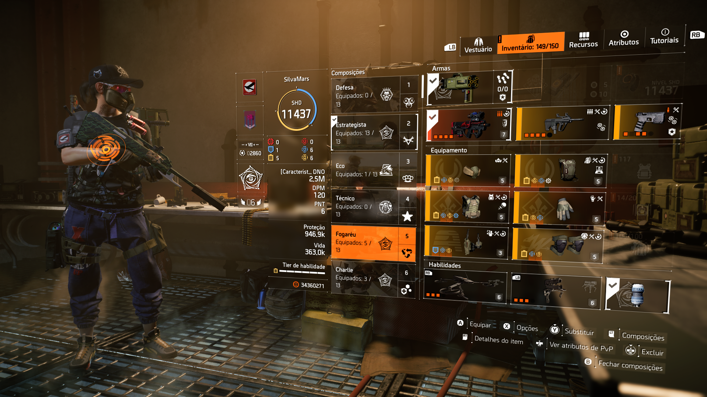
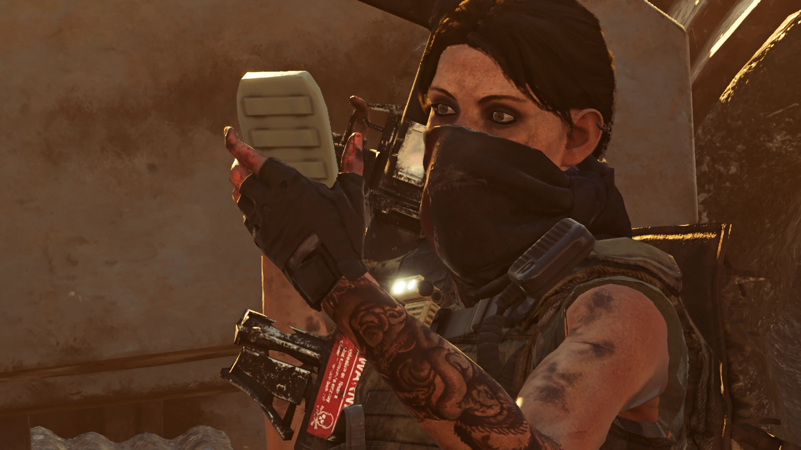
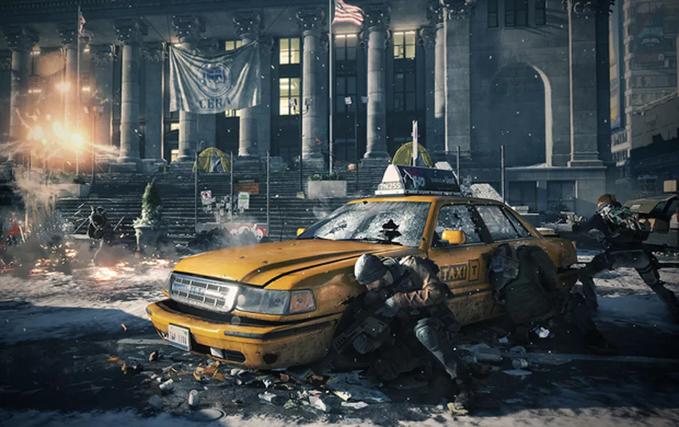
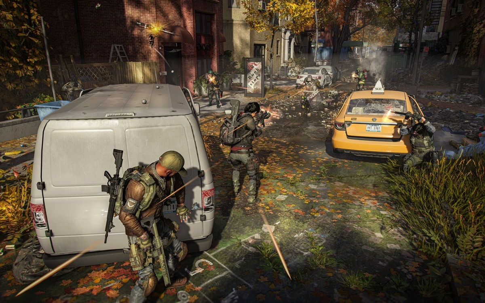
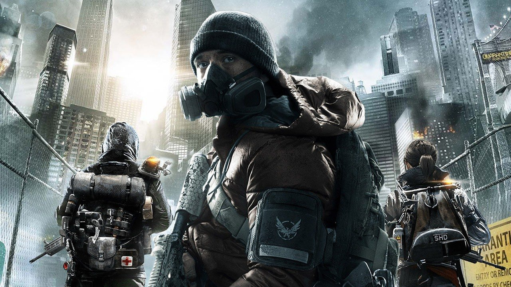

Como usar esta página
- Escolha primeiro a categoria que mais combina com seu estilo
- Depois explore o hub com o Top 10 da categoria
- Acesse os guias individuais das builds já detalhadas
- Compare caminhos diferentes antes de decidir sua próxima build
Esta é a página central das builds do portal. Aqui você pode escolher rapidamente entre as quatro grandes categorias do jogo: DPS, Skill, Híbridas e PvP. É o melhor ponto de partida para encontrar a build ideal para solo, grupo, lendária, raid, incursão e PvP.
Estas são as builds mais fortes, mais seguras ou mais recomendadas para começar no endgame. Se você quer ir direto ao que funciona bem, comece por aqui.

STRIKERUma das builds mais fortes do jogo para dano bruto. Excelente para heroica, lendária, incursão e boa parte do conteúdo de raid.

SKILLBuild segura, consistente e muito confortável para farm, Summit, Countdown e missões difíceis. Ótima escolha para solo e PvE controlado.

RAIDConteúdo voltado para composições de grupo, funções específicas e mecânicas avançadas. Ideal para quem quer evoluir no endgame em equipe.
Cada categoria abaixo reúne um estilo de jogo diferente e serve como ponto de entrada para builds focadas em dano, utilidade, equilíbrio ou PvP.

DPSTop builds focadas em dano bruto, crítica, headshot e desempenho em heroica, raid, incursão e lendária.
 SKILL
SKILL
Turret, drone, status, healer, jammer e outras opções voltadas para segurança, controle e suporte.

HÍBRIDASCombinações de dano com sustain, headshot com sobrevivência e setups versáteis para progressão real.

PVPSMG, shotgun, AR, tank, sustain e variações para Zona Cega e Conflito.
Estes são os guias individuais já prontos e ligados ao restante do site. Eles servem como ponto de profundidade dentro dos hubs principais.
 STRIKER
STRIKER
Guia completo de uma das builds mais fortes e mais usadas do jogo.
Guia voltado para farm, Countdown, Summit e PvE com segurança.
Novos guias completos serão adicionados conforme as categorias principais forem crescendo dentro do portal.
Explore DPS, Skill, Híbridas e PvP em uma estrutura clara e encontre o melhor caminho para solo, grupo, lendária, raid, incursão e endgame.